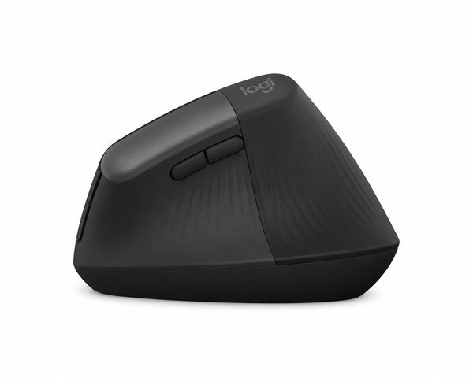
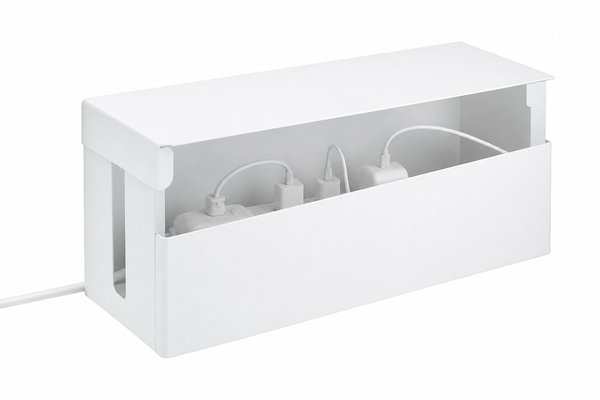
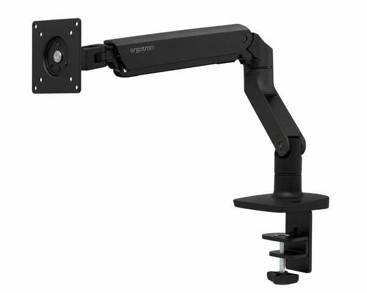
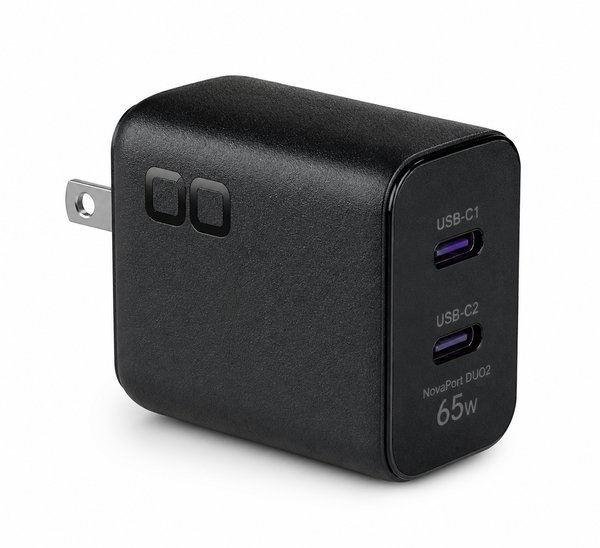
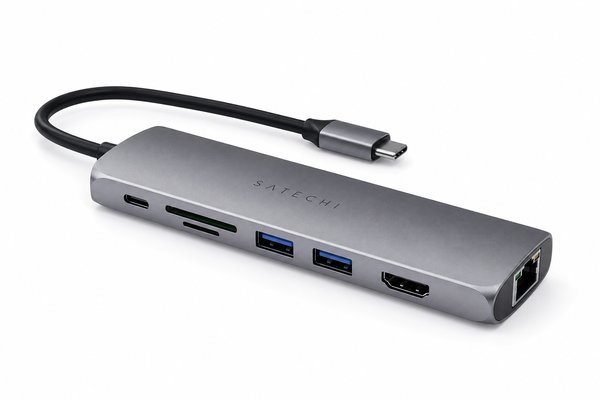
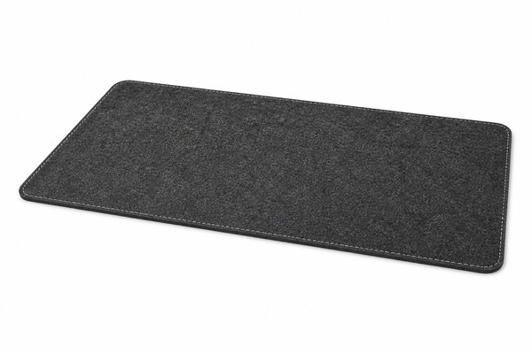
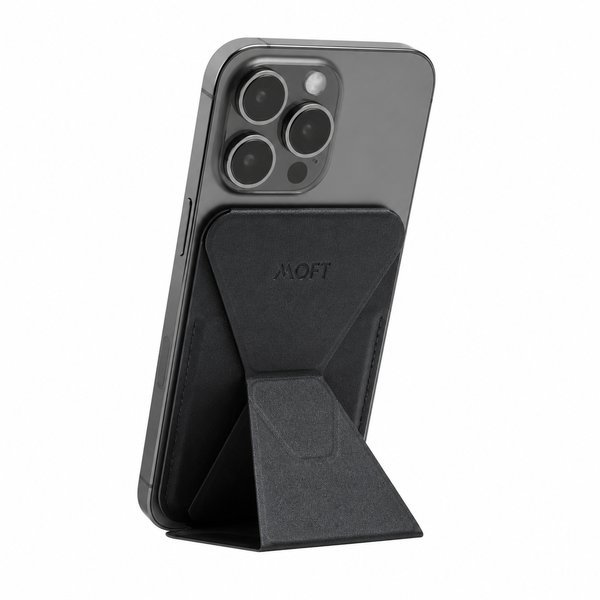
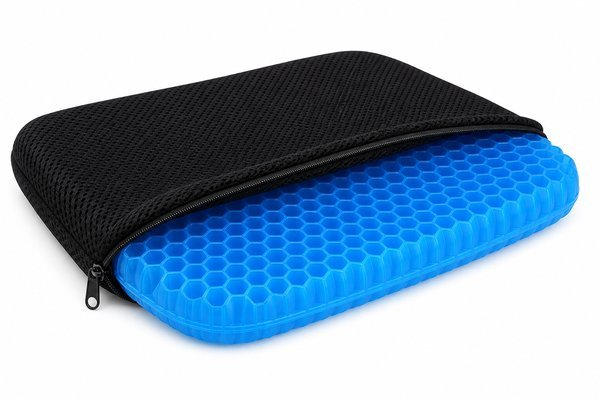
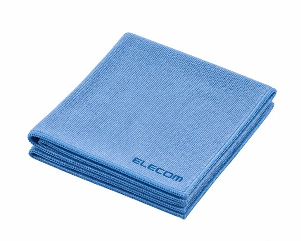

【2026年最新】PCデスク周りのおすすめ便利ガジェット10選！作業効率が劇的に上がる名品
1日の大半の時間を過ごす「PCデスク環境」。肩こりや手首の疲れ、散らかったケーブルに小さなストレスを感じていませんか？
デスク環境を少しアップデートするだけで、集中力が途切れにくくなり、作業スピードや疲労感は劇的に改善します。
今回は、20代共働き夫婦の編集部が実際にデスクに導入して「これは絶対に手放せない！」と確信した、作業効率・快適性・見た目の美しさを極める便利ガジェット10選をご紹介します。
- 一目でわかる！おすすめ10選の比較表
- BEST 1：BenQ ScreenBar モニター掛け式ライト
- BEST 2：Logicool Lift 縦型エルゴノミクスマウス
- BEST 3：tower デスク下 ケーブル＆電源タップ収納ラック
- BEST 4：エルゴトロン LX デスクマウント モニターアーム
- BEST 5：CIO NovaPort DUO2 65W 超小型急速充電器
- BEST 6：Satechi 7-in-1 USB-C マルチハブ
- BEST 7：大型フェルトデスクマット （滑り止め加工・特大サイズ）
- BEST 8：MOFT 七変化スタンド （MagSafe対応・多角度）
- BEST 9：GelLight ポータブル 折りたたみゲルクッション
- BEST 10：超極細繊維 クリーニングクロス（超厚手）
- まとめ：迷ったらコレを選べば間違いなし
| 順位 | 商品名 | カテゴリ | 最大の特徴・おすすめ理由 | 総合評価 |
|---|---|---|---|---|
| 01 | BenQ ScreenBar モニター掛け式ライト | 照明 | 画面の反射ゼロ＆手元だけを明るく照らす！目の疲れが激減 | ★★★★★ 4.9 |
| 02 | Logicool Lift 縦型エルゴノミクスマウス | マウス | 自然な握手角度で手首や腕の負担を解放！長時間の作業に | ★★★★★ 4.8 |
| 03 | 山崎実業 tower 電源タップ＆ケーブル収納ラック | 収納・配線 | デスク下のぐちゃぐちゃ配線を美しく隠すスチールラック | ★★★★★ 4.8 |
| 04 | エルゴトロン LX デスクマウントモニターアーム | アーム | 指先一つで画面を自由自在に移動！デスクが広々使える | ★★★★★ 4.9 |
| 05 | CIO NovaPort DUO2 65W 超小型充電器 | 充電器 | 机の上の重いアダプタを一掃！ノートPCもスマホも同時充電 | ★★★★★ 4.9 |
| 06 | Satechi 7-in-1 USB-C マルチハブ | ハブ・拡張 | 美しいアルミボディでポート不足を一発解消！配線スッキリ | ★★★★☆ 4.7 |
| 07 | Havit 特大フェルトデスクマット | マット | 置くだけでデスクがおしゃれに！キーボードの打鍵音も低減 | ★★★★☆ 4.6 |
| 08 | MOFT 七変化スマホスタンド | スタンド | 作業中のスマホ通知確認やビデオ会議スタンドに即変形 | ★★★★☆ 4.6 |
| 09 | GelLight ポータブルゲルクッション | 座布団・腰痛 | 硬いデスクチェアのお尻・腰の痛みを体圧分散で完全防止 | ★★★★★ 4.8 |
| 10 | エレコム 超極細繊維クリーニングクロス | メンテナンス | モニターやスマホの指紋・皮脂汚れが一拭きで新品の輝きに | ★★★★★ 4.9 |

BenQ ScreenBar モニター掛け式ライト
モニターの上部に引っ掛けるだけで、デスクの作業スペースを一切圧迫せずに手元を均一に照らしてくれるデスクライトの最高峰です。独自の光学設計により画面への光の映り込み・反射が一切なく、夜間のPC作業でも目が疲れにくくなります。
- デスク上にスタンド脚を置かないため作業スペースが広々
- 画面に光が反射せず手元のキーボードやノートだけを照らす
- 自動調光センサー搭載で周囲の明るさに合わせて最適化
- ウェブカメラをモニター中央上部に設置している場合は干渉注意

Logicool Lift 縦型エルゴノミクスマウス
自然な握手の角度（57度）で握れる縦型エルゴノミクスマウスです。従来のマウスのように手首を無理にひねる必要がないため、腱鞘炎や肩こりの予防に絶大な効果を発揮します。静音クリックでオフィスや夜間の作業にも最適です。
- 握った瞬間に手首の力がフッと抜ける自然な角度設計
- クリック音が極めて静かでオンライン会議中もカチカチ鳴らない
- 最大3台のデバイスを底面ボタンで一瞬で切り替え可能
- 従来の一般的な平型マウスからの移行時は数日の慣れが必要

tower デスク下 ケーブル＆電源タップ収納ラック
デスクの下でスパゲッティのように絡まりがちな電源タップやACアダプタ、長いケーブルを美しく浮かせて隠すスチールラックです。床にコードが散乱しないため掃除機やルンバの邪魔にならず、ホコリによるトラッキング火災の防止にも役立ちます。
- 天板に挟み込むクランプ式でデスクに穴を開けずに設置可能
- スチール製でマグネット付き電源タップがピタッと固定できる
- 通気性の良い構造で熱がこもりにくい
- デスク天板の厚みや裏面のフレーム形状を事前確認が必要

エルゴトロン LX デスクマウント モニターアーム
モニターアーム界の王様と呼ばれるベストセラーです。モニター付属の無骨なスタンドを排除し、画面を指先一つで前後・上下・傾き・縦回転へと滑らかに動かせます。モニター下のスペースが完全に空くため、デスクが驚くほどスッキリ広く使えます。
- 特許技術のコンスタント・フォースで軽い力でピタッと位置が決まる
- アルミダイキャスト製の圧倒的な耐久性と10年保証
- 視線を自然に高く保てるため猫背や首の痛みを改善
- 一度設置すると位置調整が楽しすぎてデスク沼にハマる

CIO NovaPort DUO2 65W 超小型急速充電器
デスク上の電源タップ周りをスマートにする卵サイズの65W急速充電器。ノートPCに給電しながら、もう1ポートでスマホやタブレットを同時に急速チャージ。無駄なACアダプタを減らし、デスク配線を極限までミニマルに整えます。
- 隣のコンセントと干渉しないスリムな極小設計
- 傷が目立ちにくいシボ加工のマットブラック仕上げ
- 2ポート自動最適給電でデバイスに優しい
- フルパワー稼働時は表面温度が上がるため通気の良い場所で使用

Satechi 7-in-1 USB-C マルチハブ
MacBookや薄型Windowsノートのポート不足をこれ1つで解消する高品質なアルミハブです。4K HDMI、USB-A、USB-C充電（100W PD対応）、SDカードスロットを網羅。Apple製品と見事に調和する美しいスペースグレイ仕上げです。
- 高級感あふれるアルミニウム筐体で放熱性能が高い
- 4K 60Hz出力対応で外部モニターへの映像出力が滑らか
- 持ち運びに便利なスリムで軽量な設計
- 複数ポート同時高負荷使用時はアルミ本体が温かくなる

大型フェルトデスクマット （滑り止め加工・特大サイズ）
デスクの上にサッと敷くだけで、まるで海外のおしゃれなワークスペースのような温かみと洗練された雰囲気を演出できる大判フェルトマットです。冬場の冷たいデスク天板から腕を守り、キーボードの打鍵音や振動を優しく吸収してくれます。
- キーボードとマウスをゆったり置ける大判ワイドサイズ
- 裏面ノンスリップ加工で激しいマウス操作でもズレにくい
- デスク天板の傷や汚れ防止にも効果抜群
- フェルト製のため飲み物をこぼした際は早めの拭き取りが必要

MOFT 七変化スタンド （MagSafe対応・多角度）
折り紙のように瞬時にトランスフォームするMagSafeスマホスタンドです。デスク上でスマホを立てておくことで、PC作業中に届いた通知を画面ロック解除なしで確認可能。ビデオ会議の際も自然なアングルでスマホカメラを固定できます。
- 薄さ数ミリなのに頑丈な折りたたみ三脚構造
- 縦置き・横置き・フローティングの多角度に対応
- カード収納機能付きで外出時も身軽
- MagSafe非対応ケースを使用している場合は磁力が弱まる

GelLight ポータブル 折りたたみゲルクッション
高弾性ハニカム構造のゲルが体圧を均一に分散し、長時間のデスクワークによるお尻のしびれや腰痛を防ぐクッションです。通気性に優れているため夏も蒸れず、冬は座面の底冷えを防ぎます。二つ折りで持ち運びも自由自在です。
- 卵を置いて座っても割れない圧倒的な体圧分散力
- 通気性の良いハニカム構造で長時間座っても蒸れない
- 洗える滑り止め付きカバー付属で衛生的
- 一般的な綿クッションに比べるとゲル特有のずっしりした重量感あり

超極細繊維 クリーニングクロス（超厚手）
PCモニターやスマホ、iPadの画面に付着した指紋、皮脂、ホコリを水や洗剤なしで一拭きでピカピカにしてくれる魔法のクロスです。超極細繊維「ベリーマX」を採用し、傷をつけることなく新品のクリアな視界が蘇ります。
- 力を入れずにサッとなでるだけで頑固な皮脂汚れが完全に消える
- 水洗い可能で何百回使っても拭き取り性能が落ちない
- デスクの引き出しに1枚常備しておくと毎日の作業が気持ちいい
- 拭き取り性能が高すぎて家族や同僚に取られがち
まとめ：迷ったらコレを選べば間違いなし！
デスク周りのアイテムは、一度導入すると「なぜもっと早く導入しなかったんだろう」と後悔するほど日々の作業効率と疲労度を激変させてくれます。
特にモニターライト、縦型マウス、モニターアームの3種の神器は、長時間のPC作業をするすべての人に自信を持っておすすめできます。お気に入りのガジェットで快適な作業環境を整えてみてください！